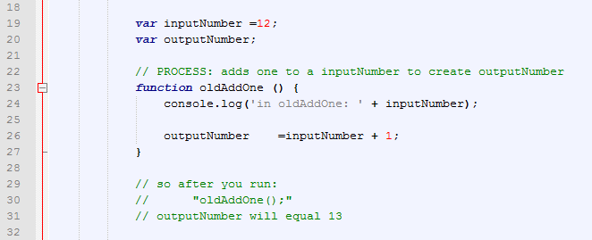
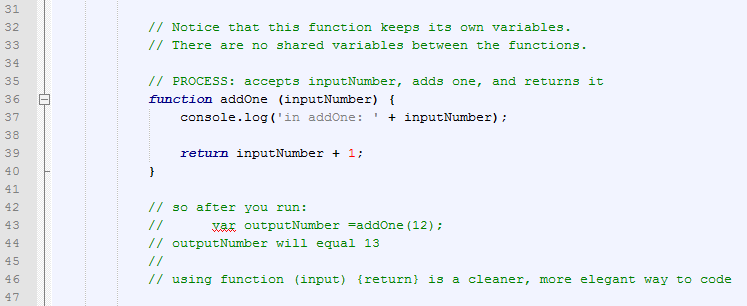
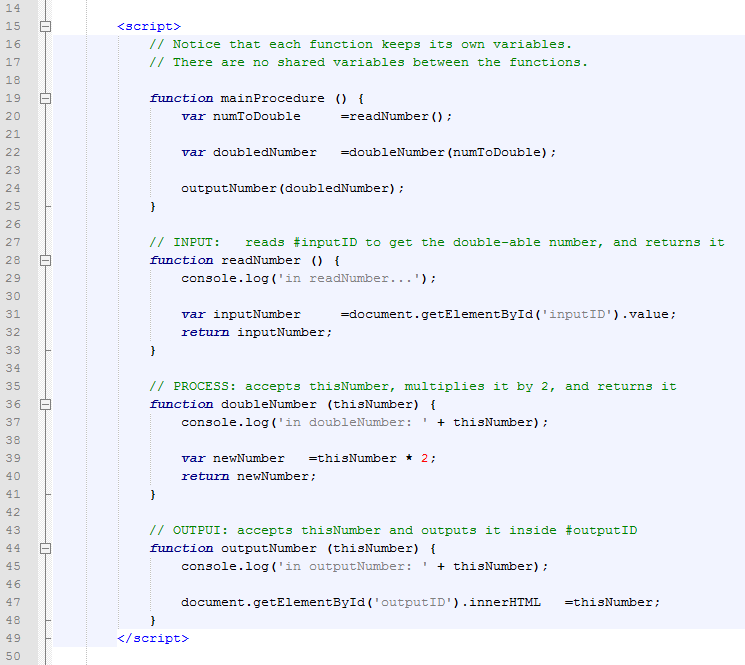
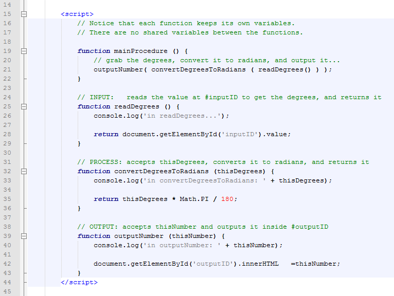

Taking in the input, pushing out the output
We've been making a lot of programs. They have tended to follow this structure:
- INIT: initialize and declare the variables
- INPUT: read something
- PROCESS: do something to the thing you read
- OUTPUT: have some kind of result
This is a good structure, and it works for small programs. But our programs are about to get bigger. Big programs can be hard to understand unless you develop great style.
Great style includes how you handle variables in your functions.
So far we have declared our variables globally at the start of our <script>,
and our functions have read and altered those variables, like this:

Sometimes programs get long. I have written programs that would easily take 20-40 pages to print, not including the libraries. Now, imagine how hard it would be to track all of your variables from the top of the page down to the bottom in a truly long program! Confusion becomes more frequent, and your code becomes less flexible.
There is another way to do it, however. Imagine if you could make functions that take their own input and spit out their own output. Then you would be able to write a program with no global variables at all.
And that is an extremely useful long term habit as you make more complex code.
Here is how you can change it: (notice the differences from above...)

Using function functionName(somethingIn) {return somethingOut}
The stylish way to create a function is to set it up like this:
function getSquare (inputNumber) {
var outputVariable =Math.pow(inputNumber, 2) // do something to inputNumber, like square it
return outputVariable;
}
Now you can make code like this:
var answer =getSquare(16); // makes answer equal to 256
This can be simplified even further with the same results, by cutting out the variables in the middle:
function getSquare (inputNumber) {
return Math.pow(inputNumber, 2) // return the square of inputNumber
}
Example One: The number doubler
Enter a number to double:
The answer is:
Let's look at the code:

There are no global variables in this example.
Instead the information is passed from one function to another, like this:
readNumber() → doubleNumber() → outputNumber()
This is called a function pipeline.
Example Two: Degrees to radians
Let's look at another example:
Enter the degrees to convert to radians: °
The answer is:
The code in this one is simpler:

The function pipeline in this example works like this:
readDegrees() → convertDegreesToRadians() → outputNumber()
Saving your work
Download the template and rename it to your last name, such as "1.21S-FunctionPipelines-LastName.html".
The assignment
Modify your template so that it uses function pipelines to perform a calculation
You will need to consider the following:
- Remember: no global variables, only variables inside individual functions
- Use
function functionName(somethingIn) {return somethingOut}to create pipelines - Choose your own calculation, simple or complex, for your assignment.
- For example, you could determine the number of transitions a cesium atom does, given a time in seconds from the user. Cesium atoms are used in highly accurate atomic clocks. A cesium atom has 9 192 631 770 transition cycles per second.